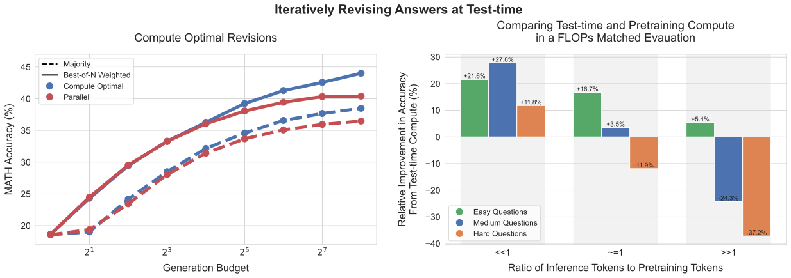
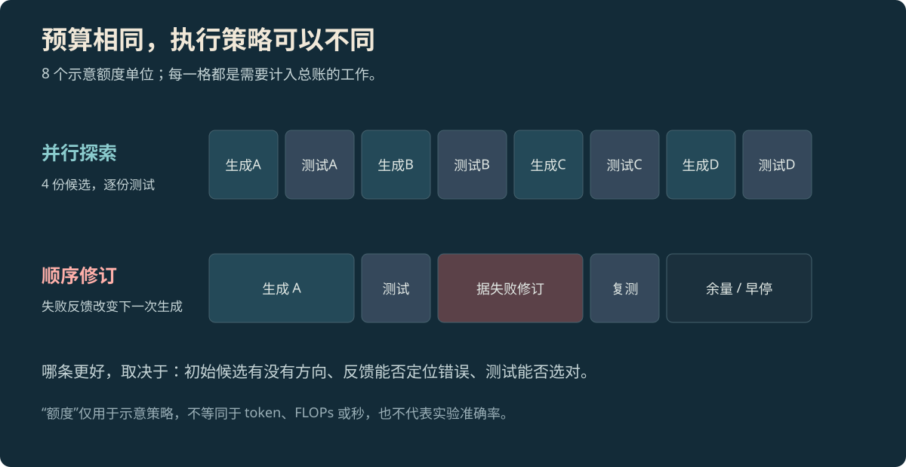

FRONTIER CONCEPT · INFERENCE
Test-time Compute：多想几次，为什么仍可能选错
用一个“第二大不同元素”的小函数拆开候选生成、验证与预算，再读 Snell 等人的真实计算曲线。
本页目录
三份答案里有正确代码，系统仍可能交付错的#
任务是返回整数列表中“第二大的不同元素”。输入 [2, 2, 1] 应返回 1；只有一个不同值时返回 None。候选 A 写成 sorted(xs)[-2]，候选 B 先去重却没有处理只有一个值，候选 C 同时处理了重复值和边界。若测试只有 [1, 3, 2]，三份代码都返回 2。
候选池已经有正确解，选择器却分不出来。再生成十份类似候选，只会扩大这个没有判别力的池子。Test-time Compute 包括生成、修订、搜索和验证消耗的计算；最终能否改善结果，取决于这些计算是否产生了有用的新候选或新证据。
函数、预算格和测试数据是本文的教学示例；下文标有作者的曲线来自论文原图。
这张论文图先看横轴，再看曲线#


放大查看 ↗左图横轴是该实验定义的 test-time compute，纵轴是准确率；比较曲线时，需要看“达到相近准确率花了多少预算”，而非只看最右边哪个点最高。实验基于 MATH 和专门微调的 PaLM 2-S* 修订模型，不能直接换算成某个通用聊天模型的响应秒数。[1]
论文里按题目难度分配策略，还存在一笔部署账：难度估计使用了每题 2048 个样本，而研究为简化分析未计入这笔开销。这解释了为什么论文中的计算收益不能原样当成线上降本承诺。部署时必须把“判断该花多少预算”的成本也算进去。
把八个额度单位放在哪里#


放大查看 ↗并行采样把预算用于探索不同方案，之后还要付出筛选成本。顺序修订把失败反馈交给下一次生成，适合“方向大致对、错误能定位”的候选。树搜索进一步对中间状态评分、保留部分分支；验证器偏差也会被搜索放大。Self-consistency 的答案聚合和 Tree of Thoughts 的分支搜索属于不同策略，不能只用“思考得更久”概括。[2][3]
对小函数，重复值测试直接定位了候选 A 的错误，顺序修订有可利用的反馈。如果所有候选都误解了“不同元素”，重新展开解法可能更有用。若需求根本没写清，增加计算没有替产品定义作决定。
让验证器真正区分这三份代码#
def second_distinct(xs):
values = sorted(set(xs))
return values[-2] if len(values) >= 2 else None
cases = [([1, 3, 2], 2), ([2, 2, 1], 1), ([5, 5], None)]
for xs, expected in cases:
assert second_distinct(xs) == expected, (xs, expected)
print("3 / 3 passed")这段 Python 只验证已写明的整数列表约定。它给出可复现的 3 / 3 passed，没有测量任何模型的修复能力。测试暴露了普通输入、重复值和不足两个不同值三种情况；若生产输入允许非整数、超大列表或流式数据，还需要另行定义和检查。
Best-of-N 的有效链路是“生成候选→验证→选择”。若验证器看不到边界测试，候选中存在正确答案只代表探索到了，不能证明能交付它。报告候选池中的最好成绩与实际选择后的成绩，可以直接发现这段损失。
延长一条推理，和保留多个候选并不一样#
s1 的 budget forcing 控制一条推理的长度，并配合精选数据上的训练。它提供的是具体模型与实验设置下的方法，不是给任意模型追加“继续想”就能复现的通用技巧。[4]一条修订链也可能先找到正确代码，随后又把它改坏，因此需要保存已验证候选，不能默认最后一版最好。
运行系统至少要分别限制生成预算、测试成本和墙钟时间。若把预算全部花在候选生成上，最后没有时间运行测试，系统只得到更多未经检查的答案。早停也应依据验证结果：当前交付条件已满足，就没有必要把剩余额度耗尽。
比较策略，保留同一张成本账#
在冻结任务上比较单候选、同总预算的并行采样、测试驱动修订。记录生成、验证、工具及路由的全部费用，另报延迟分布。并行调用能缩短墙钟时间，却不会让总 token 自动减少；一个 token、一次模型调用与一秒也不是可互换的单位。
分别查看简单题和难题。平均分提高可能来自少量题目受益，而其余请求只增加等待。对于“正确候选很少出现”的任务，优化探索；对于“正确候选经常被错选”的任务，优化验证器；对于“所有路径都缺资料”的任务，补资料。这三个改动花的是不同的预算。
参考资料
论文、官方文档与案例依据。
- [1]Snell et al. · Scaling LLM Test-Time Compute Optimally ↗
2024 年论文；计算分配与问题难度。
- [2]
- [3]Yao et al. · Tree of Thoughts ↗
中间思路的搜索、评价与回溯。
- [4]Muennighoff et al. · s1: Simple test-time scaling ↗
2025 年论文；精选数据、监督微调与 budget forcing。